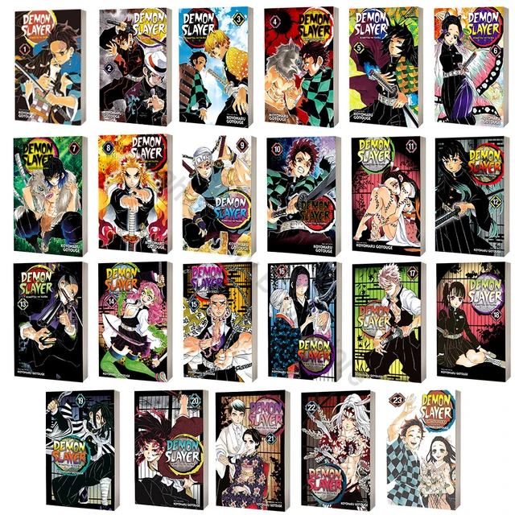

Oque é Mangá?
Mangá é o nome dado às histórias em quadrinhos japonesas.
Ele possui características marcantes que o difere das demais revistas em quadrinhos,
como a forma de leitura, publicação, diagramação e traços nos desenhos dos personagens.
Quantos Mangás Demon Slayer tem?
O mangá é serializado desde 15 de fevereiro de 2016 e foi encerrado em 18 de maio de 2020 na revista semanal Weekly Shōnen Jump, com seus capítulos sendo reunidos em 23 volumes tankōbon pela editora Shueisha.
